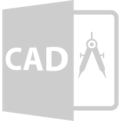
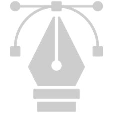
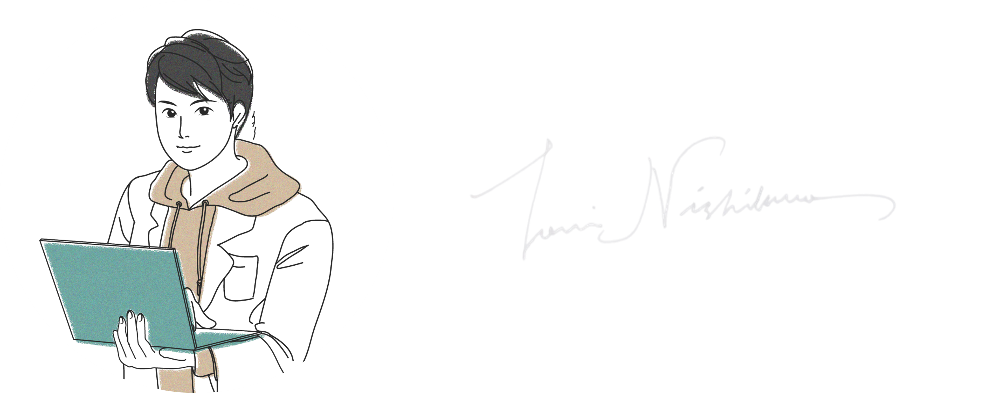
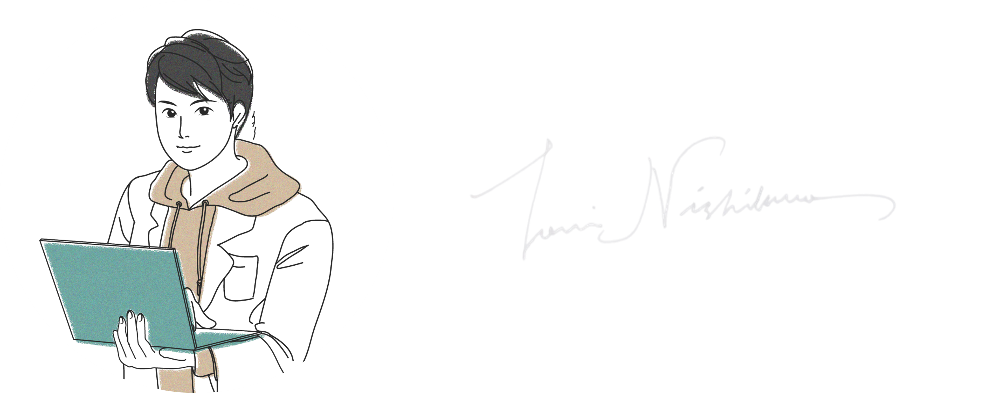

西川 登偉 / Toui Nishikawa
医療 / 腫瘍 / AI / 病理 / 医療機器
ー ごあいさつ ー
未熟者の私ですが、少しでも興味を持ってもらえればと思い、
HPを作成しました。
ご覧いただけると幸いです。
よろしくお願い申し上げます。
＜略歴＞
2018 |
私立清風南海学園高等学校（大阪） 卒業 |
2018 |
和歌山県立医科大学 医学部 入学 現 inochi WAKAZO project コアメンバー Susanosプロジェクト メンバー inochi学生フォーラムメンター |
2019 |
現 株式会社GramEye ハードウェアエンジニア |
2020 |
和歌山県立医科大学医学部 人体病理学教室 MD-PhDコース開始 |
2022 |
メディックメディア Q-Assist 講師 「医学生のためのプログラミング勉強会」担当 |
2023 |
東京大学 松尾研究室 Teaching Assistant 病理AI実装研究会 学生支部 副代表 日本メディカルAI学会 学生支部 設立準備中 (興味のある方はご連絡ください) |
2024 |
和歌山県立医科大学 医学部 卒業予定 |
スキル / Skills
Artificial intelligence
JDLA AI エンジニア
(JDLA deep learning for engineer)
JDLA AI ジェネラリスト
(JDLA deep learning for general)
日本メディカルAI学会公認資格
(Certification by Japan medical AI conference)
Python3 エンジニア認定基礎試験
(Python 3 Basic Grammar Certification)

Hardware
Please see "Works" !
Web
HTML/CSS javascript PHP
Application
Java / Swift

Cloud
Microsoft認定資格 Azure Fundamentals
(Micrsoft certificated Azure Fundamentals)
AWS認定資格 クラウド プラクティショナー
(AWS certified cloud practitioner)
3D cad
Please see "Works" !

Financial management
日商簿記2級
(The official Business Skill test in Bookkeeping 2nd Grade)
3級ファイナンシャル・プランニング技能士
(3rd grade Certified Slilled Professional of Finantial Plannning)
Statistical analysis
R programing
Photography
フォトマスター検定１級
(Photo-master 1st Grade)

Design
photoshop クリエイター能力認定試験 Expert
(Photoshop creater Expert)
illustrator クリエイター能力認定試験 Expert
(illustrator creator Expert)
趣味・その他資格
＜アウトドア / スポーツ系＞
合気道 初段（Aikido）
スノーボード (Snow board)
スキューバダイビング (Scuba diving)
キャンプ (camping)
＜インドア / 文化系＞
レザークラフト (leather craft)
フォトマスター検定１級 (Photo master 1st grade)
ジャパン ビア ソムリエ (Beer sommelier)
映画鑑賞 / アニメ
＜その他＞
普通自動車第一種運転免許 (driving licence)
１級小型船舶免許 (boats licence)
手相鑑定士 (Palm reader)
部活動 / サークル
科学研究部 ロボット班 班長（中高）
合気道部 （大学）
米国医学研究会×USMLE （大学）
予防医学サークル（大学）
和歌山臨床技能サークル（大学）

好きな言葉
「憂きことの なほこの上に 積もれかし 限りある身の 力ためさん」熊沢 蕃山
「守・破・離・守」
Artificial intelligence
JDLA AI エンジニア (JDLA deep learning for engineer) JDLA AI ジェネラリスト (JDLA deep learning for general) 日本メディカルAI学会公認資格 (Certification by Japan medical AI conference) Python3 エンジニア認定基礎試験 (Python 3 Basic Grammar Certification)
Hardware
Please see "Works" !
Web
HTML/CSS javascript PHP
Application
Java / Swift
Cloud
Microsoft認定資格 Azure Fundamentals (Micrsoft certificated Azure Fundamentals) AWS認定資格 クラウド プラクティショナー (AWS certified cloud practitioner)
3D cad
Please see "Works" !
Financial management
日商簿記2級 (The official Business Skill test in Bookkeeping 2nd Grade) 3級ファイナンシャル・プランニング技能士 (3rd grade Certified Slilled Professional of Finantial Plannning)
Statistical analysis
R programing
Photography
フォトマスター検定１級 (Photo-master 1st Grade)
Design
photoshop クリエイター能力認定試験 Expert (Photoshop creater Expert) illustrator クリエイター能力認定試験 Expert (illustrator creator Expert)
趣味・その他資格
＜アウトドア / スポーツ系＞ 合気道 初段（Aikido） スノーボード (Snow board) スキューバダイビング (Scuba diving) キャンプ (camping) ＜インドア / 文化系＞ レザークラフト (leather craft) フォトマスター検定１級 (Photo master 1st grade) ジャパン ビア ソムリエ (Beer sommelier) 映画鑑賞 / アニメ ＜その他＞ 普通自動車第一種運転免許 (driving licence) １級小型船舶免許 (boats licence) 手相鑑定士 (Palm reader)
部活動 / サークル
科学研究部 ロボット班 班長（中高） 合気道部 （大学） 米国医学研究会×USMLE （大学） 予防医学サークル（大学） 和歌山臨床技能サークル（大学）

好きな言葉 「憂きことの なほこの上に 積もれかし 限りある身の 力ためさん」熊沢 蕃山 「守・破・離・守」